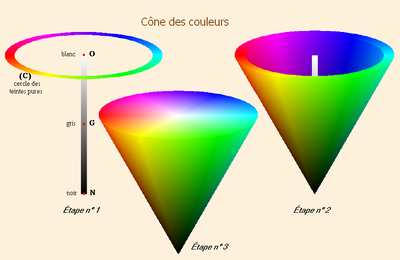

Le codage TSL
Le système Teinte - Saturation - Luminosité (Hue-Saturation-Luminance en Anglais) a été conçu pour faciliter le choix des couleurs grace à un codage naturel, plus proche de nos habitudes.
Chaque couleur est définie par trois paramètres:
• La Teinte: couleur choisie sur un cercle chromatique déroulant toutes les couleurs du rouge au violet. (0 à 360°)
• La Saturation: l'intensité de la couleur (0 à 100%)
• La Luminosité: couleur plus ou moins claire. (0 à 100%)
Ces trois valeurs peuvent être "imagées" par un peintre qui rechercherait une couleur sur sa palette. Il choisirait d'abord une teinte, puis il ajouterait du blanc ou du noir pour faire varier la luminosité, et enfin il incorporerait un peu de couleur pure, ou bien de gris neutre pour faire varier l'intensité (saturation) de la couleur.
